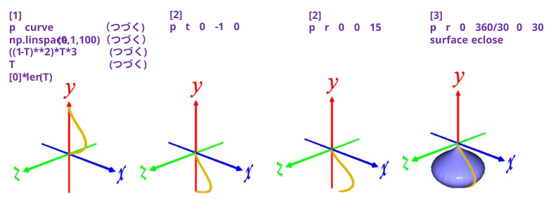
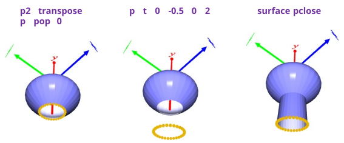

[1] 玉ねぎの曲線をつくる
p curve np.linspace(0,1,100) ((1-T)**2)*T*3 T [0]*len(T)
※ コイントスでウラ 2 回, オモテ 1 回を観察した時の尤度の式を流用･･･
[2] 先端を中心に傾ける
p t 0 -1 0 ･･･ 先端が原点に来るように平行移動
p r 0 0 15 ･･･ z 軸周りに 15°回転
[3] 回転して玉ねぎをつくる
p r 0 360/30 0 30 ･･･ y 軸周りに 360/30°回転を 30 回繰り返す
surface pclose ･･･ メッシュ化

[4] 玉ねぎの下の柄の部分をつくる
p2 transpose ･･･ 転置。玉ねぎの輪郭のシーケンス → 同心円のシーケンス
p pop 0 ･･･ 同心円の先頭を Points[ ] にコピー
p t 0 -0.5 0 2 ･･･ 同心円を y軸下方に移動。移動前と移動後の 2個作成
surface pclose ･･･ メッシュ化。転置しているので eclose ではなく pclose
